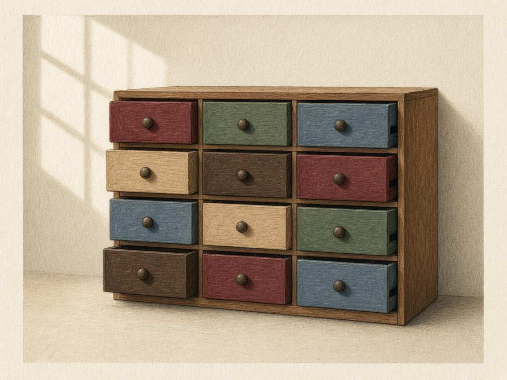
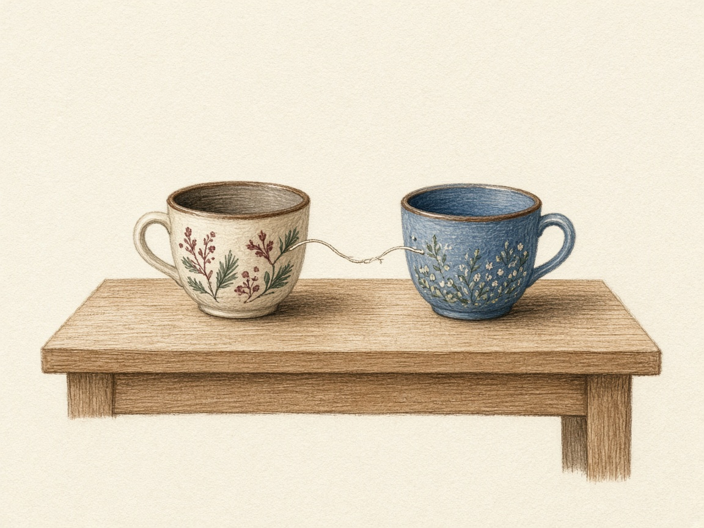
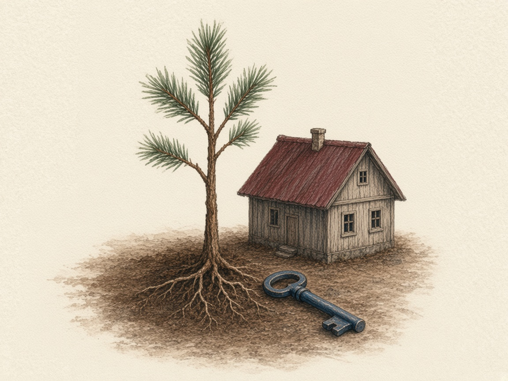
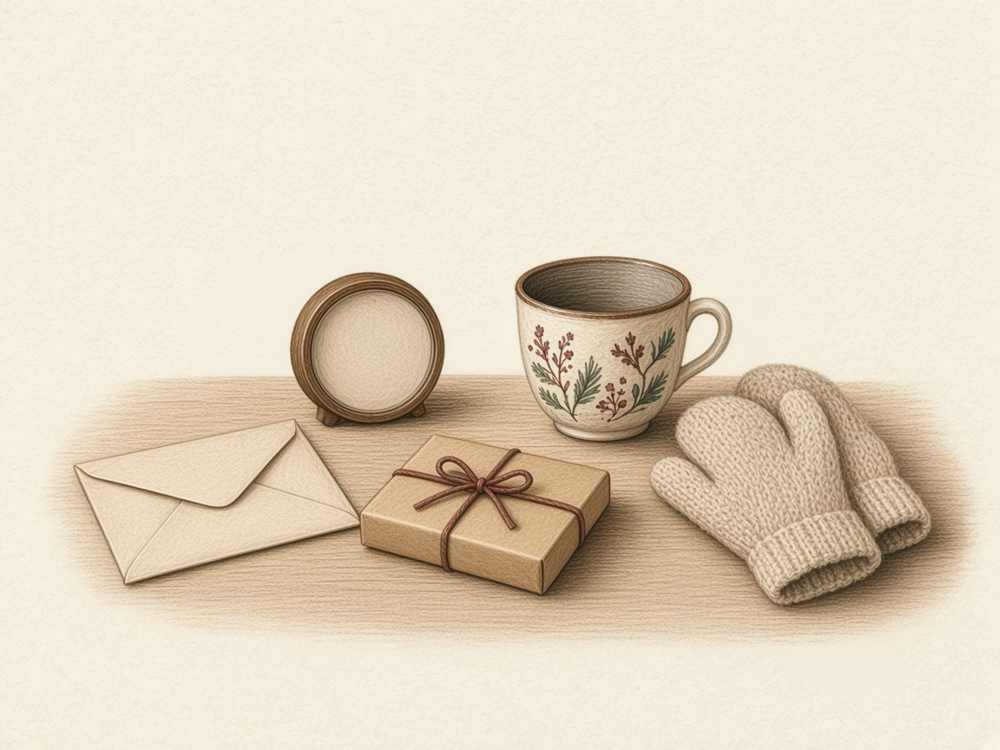

心理测试
认识自己，成为自己，绽放生命！
- SCL-90 症状自评量表 从十个方面看最近一星期的感受。
-

人格障碍筛查 PDQ-4 看 12 种人格模式有没有达到划界。这是筛查，不是诊断。 -

成人依恋关系测评 看恋爱关系里常常出现的亲近和担心。 -

寻根之旅 · 原生家庭考古 从原生家庭出发，理解自己如何成为今天的你。 -

爱的 5 种语言 每一题两句话，选出更接近「这样我会觉得被爱」的一句。
作答留在这台设备上。结果用于自我了解，不是诊断。